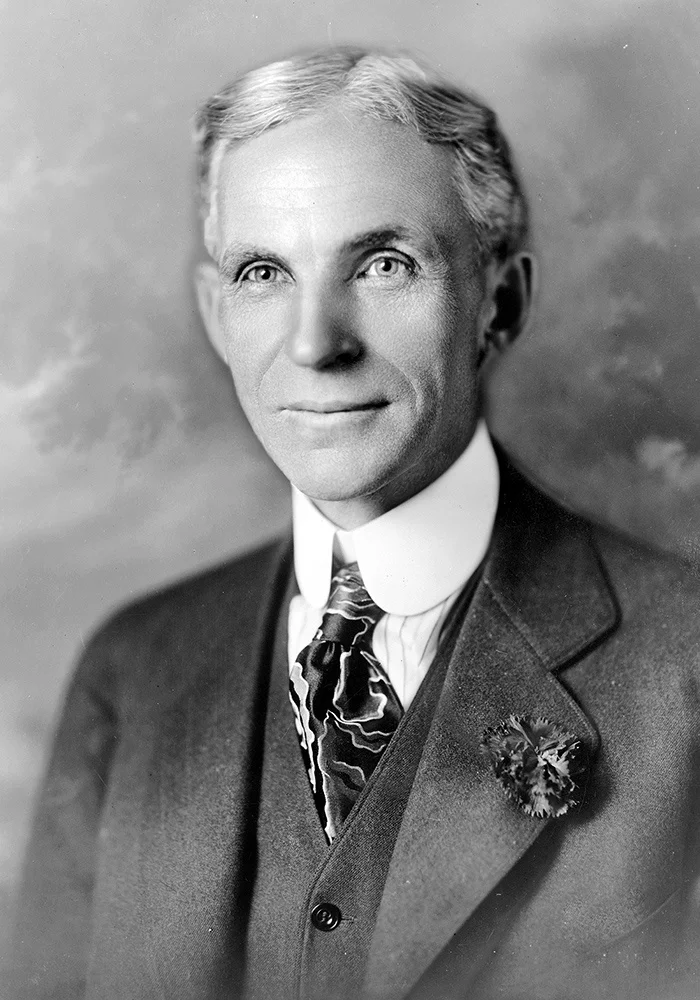
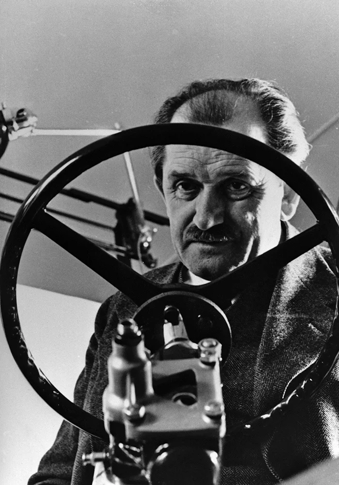
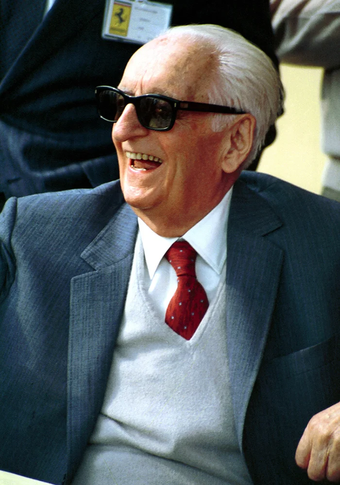
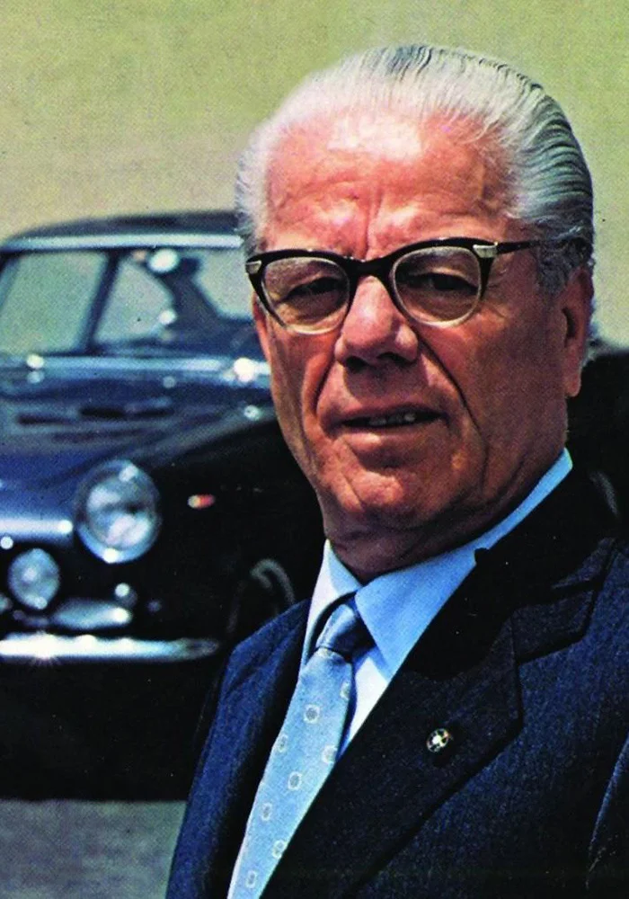

Карл Бенц
Инженер Карл Фридрих Михаэль Бенц получил патент на бензиновый двигатель, а заодно и на все прочие ключевые узлы автомобиля.Навеки к имени Карла Бенца привяжется скромный титул — «изобретатель автомобиля».

Генри Форд
Не он изобрел автомобиль, и не он придумал сборочный конвейер. Но именно этот американец совместил две эти идеи вместе, перевернув историю автопрома.

Фердинанд Порше
Даже если бы Порше не создал ни одного спорткара, его имя все равно бы значилось в числе самых важных фигур мирового автопрома.Именно его конструкторское бюро разработало «народный автомобиль» Volkswagen Käfer («Жук»).

Энцо Феррари
Он организовал спортивное общество Scuderia Ferrari («конюшня Феррари»), которое превратится в одну из самых успешных формульных команд, и автозавод, выпускающий быстрейшие и красивейшие машины в мире.

Баттиста «Пинин» Фарина
Основатель кузовостроительной и дизайнерской компании Джованни Баттиста Фарина по прозвищу Пинин был удостоен французского ордена «Почетного легиона», стал кавалером Ордена Труда Итальянской республики.

Джорджетто Джуджаро
Студия ItalDesign, основанная этим мастером автомобильного стиля, — это вторая итальянская компания (наряду с Pininfarina), которая из года в год продолжает доказывать, что итальянцы — главные специалисты по автомобильной красоте.